Boulders in Valleys Tips and Tricks
Boulders in Valleys - Tips and Tricks
Boulders in Valleys is a puzzle I enjoy creating. It is also a puzzle I enjoy solving. This post is all about solving techniques.
Beginner Tips

These are four basic techniques to get started. Don’t be intimidated by the variable names, if you see them in practice it’ll make sense.
The first pattern should be straightforward; a zero can’t roll anywhere, so it has to sit perched exactly where it is. The xs are used to support the boulder to prevent it rolling off a corner.
The second pattern requires a bit more thinking, but if \(m\neq n+1\) then, if it could fall straight down, it would be forced to follow the exact trajectory of \(n\), just from 1 higher - i.e. its deepest depth would be \(n+1\), a contradiction.
For the third pattern, we know that \(q\) needs to roll but it can’t roll left or straight down; hence it needs to roll right. We can mark the place it has rolled to with \(r-1\), which can prove useful when the puzzle is difficult.
The fourth pattern is similar to the second and third in reasoning; if \(n\) rolled left, it would be forced to follow \(p\)’s deepest trajectory. As \(p > n\), this is a contradiction.
Intermediate Tricks
To take your solving skills to the next step, you should learn some more advanced patterns. In this section, a thick dashed line represents that we are “conditioning” on an edge. That is, we ask ourselves “what happens if this edge is filled in, and what happens if it is crossed out?”. The goal is to find a contradiction down one of the paths, proving that it must be one way or the other.
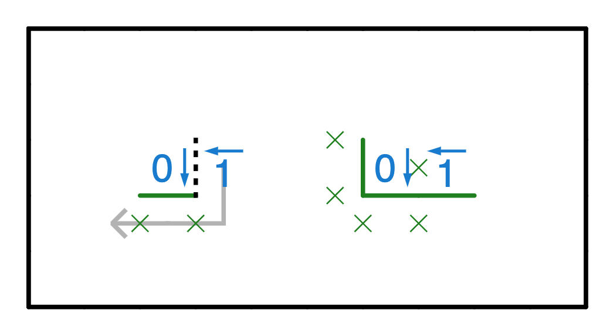
We can see that, if there is an edge to the left of the 1, the 1 would fall too far. Hence we can arrive at the “elbow” shape shown on the right. This is quite a nice pattern in that it immediately gives you a lot of information about the board; 5 xs and three edges is nothing to scoff at!
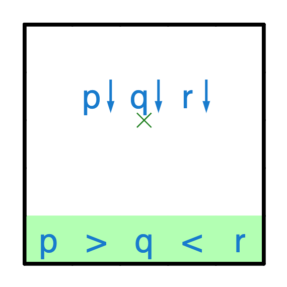
If a boulder is sandwiched between two same-direction-but-deeper boulders, then we know that the boulder has to fall straight down to prevent merging its trajectory with one of the adjacent boulders.
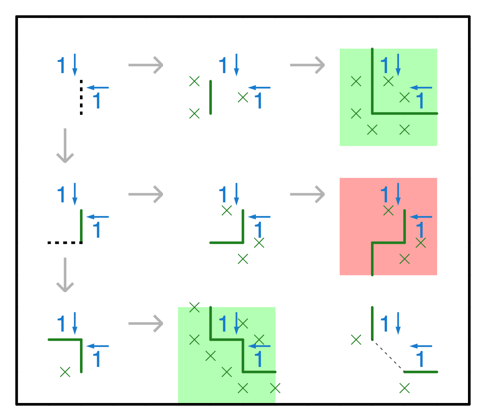
The corner pattern is harder to derive, but also very useful. We can follow a chain of logic to show that there are only two possible local solutions to the pattern. This gives us two xs and two edges, plus we know that the square marked by the diagonal dashed line either bends outwards or inwards. This is also a good pattern to have in your toolkit.
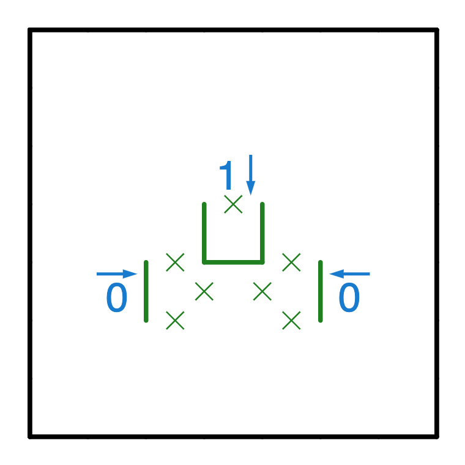
I won’t go through how to derive this pattern, as it’s a straightforward application of the resting place rule descriped in the Advanced Techniques section.
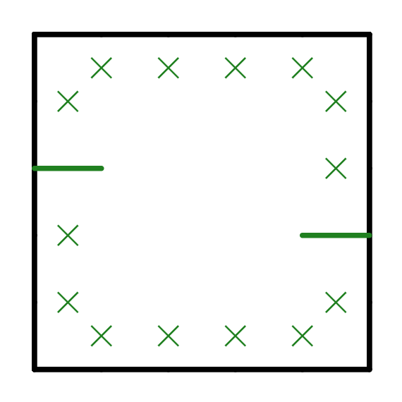
The next trick is not a pattern, but an observation - since the grid has to be partitioned in two, if you already touch the boundary in two places you know you cannot touch it in any other place. This can give you quite a few xs that are useful for near-boundary logics.
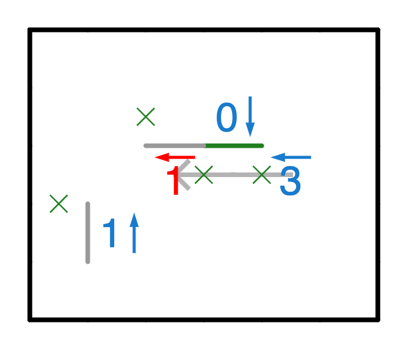
The next trick is something that was touched upon in the beginner’s section; if you know a boulder has to fall one way, it can be useful to mark that cell with the new boulder’s information. The red cell is an implied boulder of depth 1, due to the fall path of the 3. As an example of how this might be useful, the grey edges show deductions that can be made using the phantom boulder and the corner pattern.
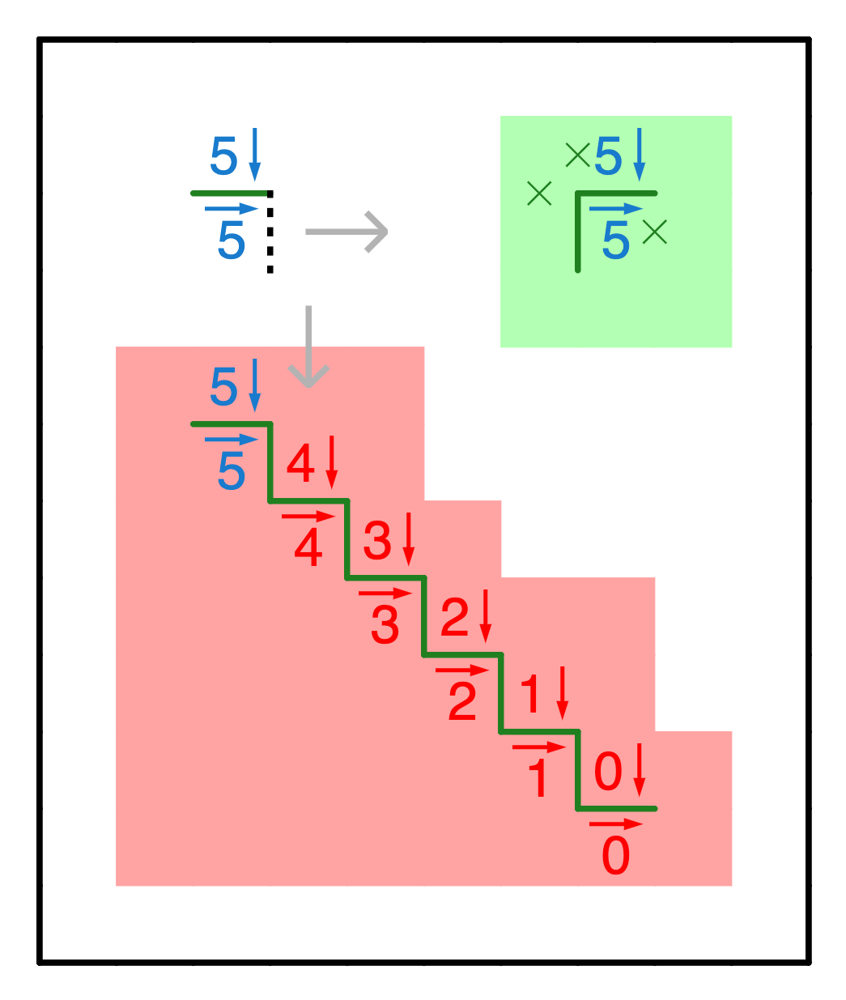
In certain situations you can create a staircase of death. If the 5↓ rolls to the right, then it will trigger an cascade that can only be stopped by intersection with the grid boundary. If it would not touch the grid boundary at the right distance, then it produces an invalid configuration and can be ruled out - this forces the 5↓ to roll left and the 5→ to fall right.
Advanced Techniques
Advanced techniques can be very powerful, but require a deeper understanding of how Boulders in Valleys works. I’m sure there are some other fundamental concepts that would qualify for being listed here, but that I don’t currently know as I’m still learning myself.
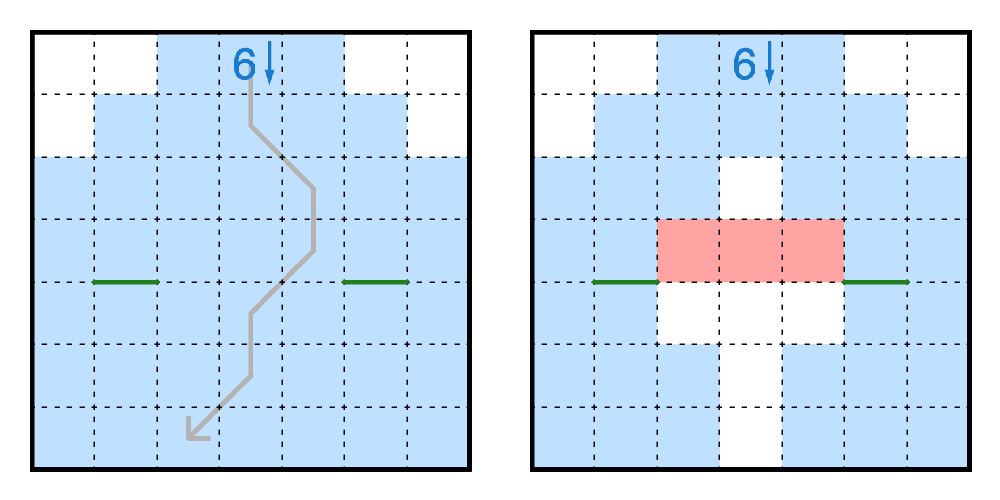
The “no-traversals” rule comes from a simple observation - no edge can cross the path of a falling boulder. If it does, then the boulder would either stop or roll to the side, thus changing its path. In the left image, we can see a possible path for the boulder to take. However, that would separate the two edges. Since the solution has to be connected, we know it cannot take this path! Thus, we can update our possible paths for the boulder (blue background) by taking this into account.
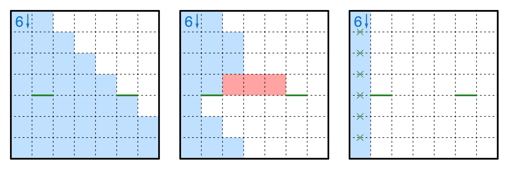
In this case, we can work out that the boulder falls straight down - if there were anything to its left deflecting it to the right, it would be stuck on the wrong side of the trajectory.
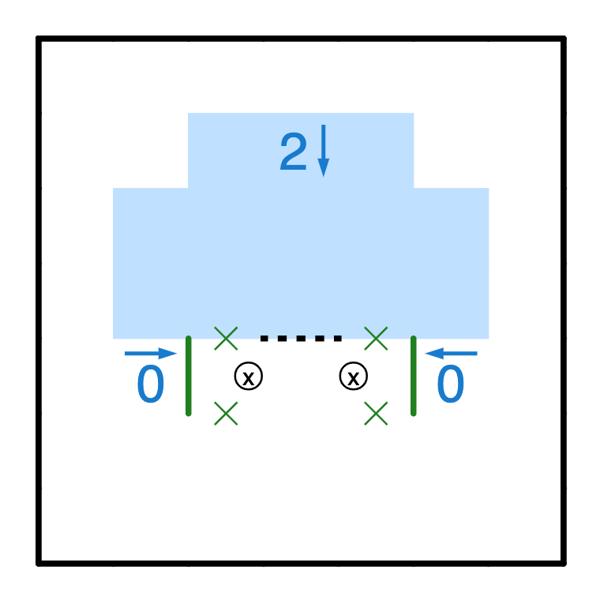
Every boulder n↓ needs to have a resting place exactly \(n\) cells below it. Suppose the resting place were over the 0s, then we’d have a clear contradiction as it’d be resting on a corner. Hence it has to rest on the dashed line. This is the resting place rule. Note that a resting place is not just a horizontal edge, but a horizontal edge with two xs beneath it.
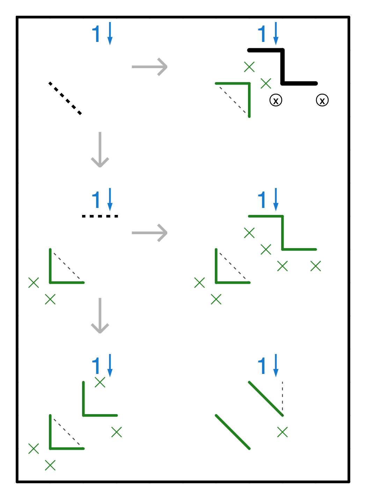
As we saw from the corner rule, we can sometimes get a “diagonal” deduced, saying that “either all edges on one side of the diagonal are filled in, or all edges on the other side are filled in”. Some things can extend this chain, such as a 1↓ in the right place. Note that this extension has a minor flaw in that the diagonal is not “perfect” - one of the conditions allows a third edge on the diagonal to form a ‘u’ shape to catch the 1↓. However, if we kept on adding 1↓s to the up-right of the previous 1↓, we could continue to propagate this logic.